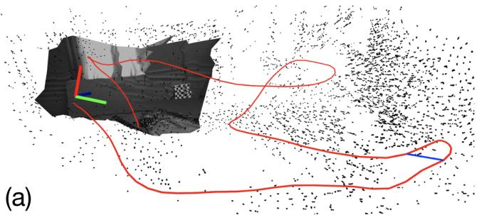
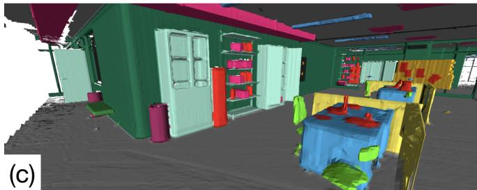
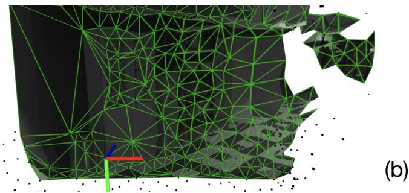
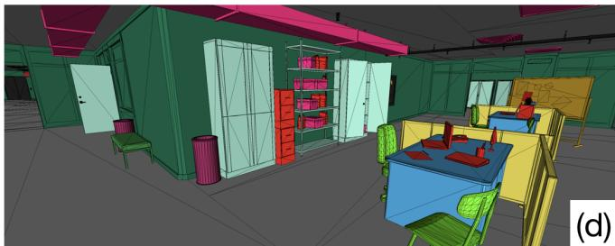
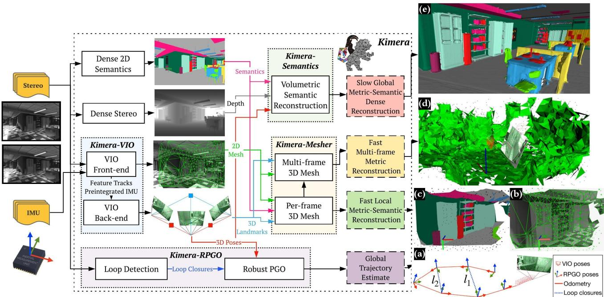
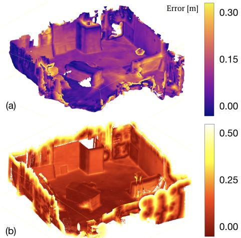
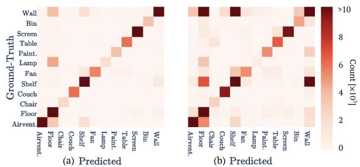
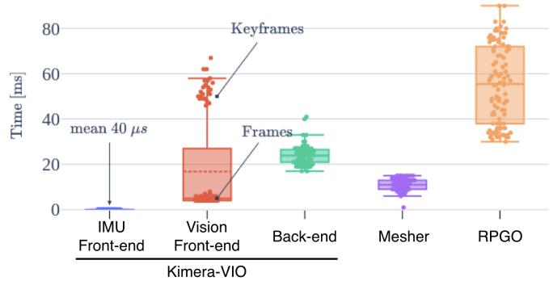

Kimera: an Open-Source Library for Real-Time Metric-Semantic Localization and Mapping
Antoni Rosinol, Marcus Abate, Yun Chang, Luca Carlone




Fig. 1: Kimera is an open-source C++ library for real-time metric-semantic SLAM. It provides (a) visual-inertial state estimates at IMU rate, and a globally consistent and outlier-robust trajectory estimate, computes (b) a low-latency local mesh of the scene that can be used for fast obstacle avoidance, and builds (c) a global semantically annotated 3D mesh, which accurately reflects the ground truth model (d).
Abstract— We provide an open-source C++ library for realtime metric-semantic visual-inertial Simultaneous Localization And Mapping (SLAM). The library goes beyond existing visual and visual-inertial SLAM libraries (e.g., ORB-SLAM, VINS-Mono, OKVIS, ROVIO) by enabling mesh reconstruction and semantic labeling in 3D. Kimera is designed with modularity in mind and has four key components: a visual-inertial odometry (VIO) module for fast and accurate state estimation, a robust pose graph optimizer for global trajectory estimation, a lightweight 3D mesher module for fast mesh reconstruction, and a dense 3D metric-semantic reconstruction module. The modules can be run in isolation or in combination, hence Kimera can easily fall back to a state-of-the-art VIO or a full SLAM system. Kimera runs in real-time on a CPU and produces a 3D metric-semantic mesh from semantically labeled images, which can be obtained by modern deep learning methods. We hope that the flexibility, computational efficiency, robustness, and accuracy afforded by Kimera will build a solid basis for future metric-semantic SLAM and perception research, and will allow researchers across multiple areas (e.g., VIO, SLAM, 3D reconstruction, segmentation) to benchmark and prototype their own efforts without having to start from scratch.
SUPPLEMENTARY MATERIAL https://github.com/MIT-SPARK/Kimera https://www.youtube.com/watch?v=-5XxXRABXJs
A. Rosinol, M. Abate, Y. Chang, L. Carlone are with the Laboratory for Information & Decision Systems (LIDS), Massachusetts Institute of Technology, Cambridge, MA, USA, {arosinol,mabate,yunchang,lcarlone}@mit.edu This work was partially funded by ARL DCIST CRA W911NF-17-2- 0181, MIT Lincoln Laboratory, and ‘la Caixa’ Foundation (ID 100010434), under the agreement LCF/BQ/AA18/11680088 (A. Rosinol).
I. INTRODUCTION
Metric-semantic understanding is the capability to simultaneously estimate the 3D geometry of a scene and attach a semantic label to objects and structures (e.g., tables, walls). Geometric information is critical for robots to navigate safely and to manipulate objects, while semantic information provides the ideal level of abstraction for a robot to understand and execute human instructions (e.g., “bring me a cup of coffee”, “exit from the red door”) and to provide humans with models of the environment that are easy to understand.
Despite the unprecedented progress in geometric reconstruction (e.g., SLAM [1], Structure from Motion [2], and Multi-View Stereo [3]) and deep-learning-based semantic segmentation (e.g., [4]–[10]), research in these two fields has traditionally proceeded in isolation. However, recently there has been a growing interest towards research and applications at the intersection of these areas [1], [11]–[15].
This growing interest motivated us to create and release Kimera, a library for metric-semantic localization and mapping that combines the state of the art in geometric and semantic understanding into a modern perception library. Contrary to related efforts targeting visual-inertial odometry (VIO) and SLAM, we combine visual-inertial SLAM, mesh reconstruction, and semantic understanding. Our effort also complements approaches at the boundary between metric and semantic understanding in several aspects. First, while existing efforts focus on RGB-D sensing, Kimera uses visual (RGB) and inertial sensing, which works well in a broader variety of (indoor and outdoor) environments. Second, while related works [16]–[18] require a GPU for 3D mapping, we provide afast, lightweight, and scalable CPU-based solution. Finally, we focus on robustness: we include state-of-theart outlier rejection methods to ensure that Kimera executes robustly and with minimal parameter tuning across a variety of scenarios, from real benchmarking datasets [19] to photorealistic simulations [20], [21].
| Method | Sensors | Back-end | Geometry | Sema-ntics |
| ORB-SLAM [22] | mono | g2o | points | x |
| DSO [23] | mono | g20 | points | X |
| VINS-mono [24] | mono/IMU | Ceres | points | X |
| VINS-Fusion [25] | mono/stereo/IMU | Ceres | points | x |
| ROVIOLI [26] | stereo/IMU | EKF | points | x |
| SVO-GTSAM [27] | mono/IMU | GTSAM | points | x |
| ElasticFusion [18] | RGB-D | alternation | surfels | x |
| Voxblox [28] | RGB-D | [26] | TSDF | X |
| SLAM++ [16] | RGB-D | alternation | objects | V |
| SemanticFusion [17] | RGB-D | [18] | surfels | |
| Mask-fusion [29] | RGB-D | [30] | surfels | |
| SegMap [31] | lidar | GTSAM | points/segments | |
| XIVO [32] | mono/IMU | EKF | objects | |
| Voxblox++ [14] | RGB-D | [26] | TSDF | |
| Kimera | mono/stereo/IMU | GTSAM | mesh/TSDF |
TABLE I: Related open-source libraries for visual and visualinertial SLAM (top) and metric-semantic reconstruction (bottom).
Related Work. We refer the reader to Table I for a visual comparison against existing VIO and visual-SLAM systems, and to [1] for a broader review on SLAM. While early work on metric-semantic understanding [11], [33] were designed for offline processing, recent years have seen a surge of interest towards real-time metric-semantic mapping, triggered by pioneering works such as SLAM++ [16]. Most of these works (i) rely on RGB-D cameras, (ii) use GPU processing, (iii) alternate tracking and mapping (“alternation” in Table I), and (iv) use voxel-based (e.g., Truncated Signed Distance Function, TSDF), surfel, or object representations. Examples include SemanticFusion [17], the approach of Zheng et al. [15], Tateno et al. [34], and Li et al. [35], Fusion++ [36], Mask-fusion [29], Cofusion [37], and MID-Fusion [38]. Recent work investigates CPU-based approaches, e.g., Wald et al. [39], PanopticFusion [40], and Voxblox++ [14]; these also rely on RGB-D sensing. A sparser set of contributions address other sensing modalities, including monocular cameras (e.g., CNN-SLAM [41], VSO [42], VITAMIN-E [43], XIVO [32]) and lidar (e.g., SemanticKitti [44], SegMap [31]). XIVO [32] and Voxblox++ [14] are the closest to our proposal. XIVO [32] is an EKF-based visual-inertial approach and produces an object-based map. Voxblox++ [14] relies on RGB-D sensing, wheel odometry, and pre-built maps using maplab [26] to obtain visual-inertial pose estimates. Contrary to these works, Kimera (i) provides a highly-accurate real-time optimizationbased VIO, (ii) uses a robust and versatile pose graph optimizer, and (iii) provides a lightweight mesh reconstruction.
Contribution. We release Kimera, an open-source C++ library that uses visual-inertial sensing to estimate the state of the robot and build a lightweight metric-semantic mesh model of the environment. The name Kimera stems from the hybrid nature of our library, that unifies state-of-theart efforts across research areas, including VIO, pose graph optimization (PGO), mesh reconstruction, and 3D semantic segmentation. Kimera includes four key modules:
• Kimera-VIO: a VIO module for fast and accurate IMU-rate state estimation. At its core, Kimera-VIO features a GTSAM-based VIO approach [45], using IMUpreintegration and structureless vision factors [27], and achieves top performance on the EuRoC dataset [19];
• Kimera-RPGO: a robust pose graph optimization (RPGO) method that capitalizes on modern techniques for outlier rejection [46]. Kimera-RPGO adds a robustness layer that avoids SLAM failures due to perceptual aliasing, and relieves the user from time-consuming parameter tuning;
• Kimera-Mesher: a module that computes a fast per-frame and multi-frame regularized 3D mesh to support obstacle avoidance. The mesher builds on previous algorithms by the authors and other groups [43], [47]–[49];
• Kimera-Semantics: a module that builds a slower-butmore-accurate global 3D mesh using a volumetric approach [28], and semantically annotates the 3D mesh using 2D pixel-wise semantic segmentation.
Kimera can work both with offline datasets or online using the Robot Operating System (ROS) [50]. It runs in real-time on a CPU and provides useful debugging and visualization tools. Moreover, it is modular and allows replacing each module or executing them in isolation. For instance, it can fall back to a VIO solution or can simply estimate a geometric mesh if the semantic labels are not available.
II. KIMERA
Fig. 2 shows Kimera’s architecture. Kimera takes stereo frames and high-rate inertial measurements as input and returns (i) a highly accurate state estimate at IMU rate, (ii) a globally-consistent trajectory estimate, and (iii) multiple meshes of the environment, including a fast local mesh and a global semantically annotated mesh. Kimera is heavily parallelized and uses four threads to accommodate inputs and outputs at different rates (e.g., IMU, frames, keyframes). Here we describe the architecture by threads, while the description of each module is given in the following sections.
The first thread includes the Kimera-VIO front-end (Section II-A) that takes stereo images and IMU data and outputs feature tracks and preintegrated IMU measurements. The front-end also publishes IMU-rate state estimates. The second thread includes (i) the Kimera-VIO back-end, that outputs optimized state estimates, and (ii) Kimera-Mesher (Section II-C), that computes low-latency (< 20ms) perframe and multi-frame 3D meshes. These two threads allow creating the per-frame mesh in Fig. 2(b) (which can also come with semantic labels as in Fig. 2(c)), as well as the multi-frame mesh in Fig. 2(d). The last two threads operate at slower rate and are designed to support lowfrequency functionalities, such as path planning. The third thread includes Kimera-RPGO (Section II-B), a robust PGO implementation that detects loop closures, rejects outliers, and estimates a globally consistent trajectory (Fig. 2(a)). The last thread includes Kimera-Semantics (Section II-D), that uses dense stereo and 2D semantic labels to obtain a refined metric-semantic mesh, using Kimera-VIO’s pose estimates.

Fig. 2: Kimera’s architecture. Kimera uses images and IMU data as input (shown on the left) and outputs (a) pose estimates and (b-e) multiple metric-semantic reconstructions. Kimera has 4 key modules: Kimera-VIO, Kimera-RPGO, Kimera-Mesher, Kimera-Semantics.
A. Kimera-VIO: Visual-Inertial Odometry Module
Kimera-VIO implements the keyframe-based maximuma-posteriori visual-inertial estimator presented in [27]. In our implementation, the estimator can perform both full smoothing orfixed-lag smoothing, depending on the specified time horizon; we typically use the latter to bound the estimation time. We also extend [27] to work with both monocular and stereo frames. Kimera-VIO includes a (visual and inertial) front-end which is in charge of processing the raw sensor data, and a back-end, that fuses the processed measurements to obtain an estimate of the state of the sensors (i.e., pose, velocity, and sensor biases).
1) VIO Front-end: Our IMU front-end performs onmanifold preintegration [27] to obtain compact preintegrated measurements of the relative state between two consecutive keyframes from raw IMU data. The vision front-end detects Shi-Tomasi corners [51], tracks them across frames using the Lukas-Kanade tracker [52], finds left-right stereo matches, and performs geometric verification . We perform both mono(cular) verification using 5-point RANSAC [53] and stereo verification using 3-point RANSAC [54]; the code also offers the option to use the IMU rotation and perform mono and stereo verification using 2-point [55] and 1-point RANSAC, respectively. Feature detection, stereo matching, and geometric verification are executed at each keyframe, while we only track features at intermediate frames.
2) VIO Back-end: At each keyframe, preintegrated IMU and visual measurements are added to a fixed-lag smoother (a factor graph) which constitutes our VIO back-end. We use the preintegrated IMU model and the structureless vision model of [27]. The factor graph is solved using iSAM2 [56] in GTSAM [57]. At each iSAM2 iteration, the structureless vision model estimates the 3D position of the observed features using DLT [58] and analytically eliminates the corresponding 3D points from the VIO state [59]. Before elimination, degenerate points (i.e., points behind the camera or without enough parallax for triangulation) and outliers (i.e., points with large reprojection error) are removed, providing an extra robustness layer. Finally, states that fall out of the smoothing horizon are marginalized out using GTSAM.
B. Kimera-RPGO: Robust Pose Graph Optimization Module
Kimera-RPGO is in charge of (i) detecting loop closures between the current and past keyframes, and (ii) computing globally consistent keyframe poses using robust PGO.
1) Loop Closure Detection: The loop closure detection relies on the DBoW2 library [60] and uses a bag-of-word representation to quickly detect putative loop closures. For each putative loop closure, we reject outlier loop closures using mono and stereo geometric verification (as described in Section II-A), and pass the remaining loop closures to the robust PGO solver. Note that the resulting loop closures can still contain outliers due to perceptual aliasing (e.g., two identical rooms on different floors of a building).
2) Robust PGO: This module is implemented in GTSAM, and includes a modern outlier rejection method, Incremental Consistent Measurement Set Maximization (PCM) [46], that we tailor to a single-robot and online setup. We store separately the odometry edges (produced by Kimera-VIO) and the loop closures (produced by the loop closure detection); each time the PGO is executed, we first select the largest set of consistent loop closures using a modified version of PCM, and then execute GTSAM on the pose graph including the odometry and the consistent loop closures.
PCM is designed for the multi-robot case and only checks that inter-robot loop closures are consistent. We developed a C++ implementation of PCM that (i) adds an odometry consistency check on the loop closures and (ii) incrementally updates the set of consistent measurements to enable online operation. The odometry check verifies that each loop closure in Fig. 2(a)) is consistent with the odometry (in red in the figure): in the absence of noise, the poses along the cycle formed by the odometry and the loop must compose to the identity. As in PCM, we flag as outliers loops for which the error accumulated along the cycle is not consistent with the measurement noise using a Chi-squared test. If a loop detected at the current time t passes the odometry check, we test if it is pairwise consistent with previous loop closures as in [46] (e.g., check if loops and in Fig. 2(a) are consistent with each other). While PCM [46] builds an adjacency matrix from scratch to keep track of pairwise-consistent loops (where L is the number of detected loop closures), we enable online operation by building the matrix A incrementally. Each time a new loop is detected, we add a row and column to the matrix A and only test the new loop against the previous ones. Finally, we use the fast maximum clique implementation of [61] to compute the largest set of consistent loop closures. The set of consistent measurements are added to the pose graph (together with the odometry) and optimized using Gauss-Newton.
C. Kimera-Mesher: 3D Mesh Reconstruction
Kimera-Mesher can quickly generate two types of 3D meshes: (i) a per-frame 3D mesh, and (ii) a multi-frame 3D mesh spanning the keyframes in the VIO fixed-lag smoother.
1) Per-frame mesh: As in [47], we first perform a 2D Delaunay triangulation over the successfully tracked 2D features (generated by the VIO front-end) in the current keyframe. Then, we back-project the 2D Delaunay triangulation to generate a 3D mesh (Fig. 2(b)), using the 3D point estimates from the VIO back-end. While the per-frame mesh is designed to provide low-latency obstacle detection, we also provide the option to semantically label the resulting mesh, by texturing the mesh with 2D labels (Fig. 2(c)).
2) Multi-frame mesh: The multi-frame mesh fuses the per-frame meshes collected over the VIO receding horizon into a single mesh (Fig. 2(d)). Both per-frame and multiframe 3D meshes are encoded as a list of vertex positions, together with a list of triplets of vertex IDs to describe the triangular faces. Assuming we already have a multi-frame mesh at time , for each new per-frame 3D mesh that we generate (at time we loop over its vertices and triplets and add vertices and triplets that are in the per-frame mesh but are missing in the multi-frame one. Then we loop over the multi-frame mesh vertices and update their 3D position according to the latest VIO back-end estimates. Finally, we remove vertices and triplets corresponding to old features observed outside the VIO time horizon. The result is an up-to-date 3D mesh spanning the keyframes in the current VIO time horizon. If planar surfaces are detected in the mesh, regularity factors [47] are added to the VIO backend, which results in a tight coupling between VIO and mesh regularization, see [47] for further details.
D. Kimera-Semantics: Metric-Semantic Segmentation
We adapt the bundled raycasting technique introduced in [28] to (i) build an accurate global 3D mesh (covering the entire trajectory), and (ii) semantically annotate the mesh.
1) Global mesh: Our implementation builds on Voxblox [28] and uses a voxel-based (TSDF) model to filter out noise and extract the global mesh. At each keyframe, we use dense stereo (semi-global matching [62]) to obtain a 3D point cloud from the current stereo pair. Then we apply bundled raycasting using Voxblox [28], using the “fast” option discussed in [28]. This process is repeated at each keyframe and produces a TSFD, from which a mesh is extracted using marching cubes [63].
2) Semantic annotation: Kimera-Semantics uses 2D semantically labeled images (produced at each keyframe) to semantically annotate the global mesh; the 2D semantic labels can be obtained using off-the-shelf tools for pixel-level 2D semantic segmentation, e.g., deep neural networks [7]– [9], [64]–[69] or classical MRF-based approaches [70]. To this end, during the bundled raycasting, we also propagate the semantic labels. Using the 2D semantic segmentation, we attach a label to each 3D point produced by the dense stereo. Then, for each bundle of rays in the bundled raycasting, we build a vector of label probabilities from the frequency of the observed labels in the bundle. We then propagate this information along the ray only within the TSDF truncation distance , near the surface) to spare computation. In other words, we spare the computational effort of updating probabilities for the “empty” label. While traversing the voxels along the ray, we use a Bayesian update to update the label probabilities at each voxel, similar to [17]. After bundled semantic raycasting, each voxel has a vector of label probabilities, from which we extract the most likely label. The metric-semantic mesh is finally extracted using marching cubes [63]. The resulting mesh is significantly more accurate than the multi-frame mesh of Section II-C, but it is slower to compute (≈ 0.1s, see Section III-D).
E. Debugging Tools
While we limit the discussion for space reasons, it is worth mentioning that Kimera also provides an open-source suite of evaluation tools for debugging, visualization, and benchmarking of VIO, SLAM, and metric-semantic reconstruction. Kimera includes a Continuous Integration server (Jenkins) that asserts the quality of the code (compilation, unit tests), but also automatically evaluates Kimera-VIO and Kimera-RPGO on the EuRoC’s datasets using evo [71]. Moreover, we provide Jupyter Notebooks to visualize intermediate VIO statistics (e.g., quality of the feature tracks, IMU preintegration errors), as well as to automatically assess the quality of the 3D reconstruction using Open3D [72].
III. EXPERIMENTAL EVALUATION
Section III-A shows that (i) Kimera attains state-of-theart state estimation performance and (ii) our robust PGO relieves the user from time-consuming parameter tuning. Section III-B demonstrates Kimera’s 3D mesh reconstruction on EuRoC, using the subset of scenes providing a groundtruth point cloud. Section III-C inspects Kimera’s 3D metricsemantic reconstruction using a photo-realistic simulator (see video attachment), which provides ground-truth 3D semantics. Finally, Section III-D highlights Kimera’s realtime performance and analyzes the runtime of each module.
TABLE II: RMSE of state-of-the-art VIO pipelines (reported from [77] and [24]) compared to Kimera, on the EuRoC dataset. In bold the best result for each category: fixed-lag smoothing, full smoothing, and PGO with loop closure. × indicates failure.
| Seq. | RMSE ATE [m] | ||||||
| Fixed-lag Smoothing | Full Smoothing Loop Closure | ||||||
| OVVIS | -SNIA ROΛVIO | K-Kimira Mono OIA | GTSAM -OΛS | K-Kimera- OIA | -SNIΛ L | KKimra- RPGO | |
| MSCRE | 0.21 | ||||||
| MH-1 0.16 | 0.42 | 0.15 | 0.11 | 0.05 | 0.04 | 0.12 0.08 | |
| MH_2 0.22 | 0.45 | 0.25 | 0.15 0.10 | 0.03 | 0.07 | 0.12 0.09 | |
| MH_30.24 | 0.23 | 0.25 0.22 | 0.16 | 0.12 | 0.12 | 0.13 0.11 | |
| MH_40.34 | 0.37 | 0.49 0.32 | 0.24 | 0.13 | 0.27 | 0.18 0.15 | |
| MH_50.47 | 0.48 | 0.52 0.30 | 0.35 | 0.16 | 0.20 | 0.21 0.24 | |
| V1_1 | 0.09 | 0.34 | 0.10 0.08 | 0.05 | 0.07 | 0.06 | 0.06 0.05 |
| V1_2 | 0.20 | 0.20 | 0.10 0.11 | 0.08 | 0.11 | 0.07 | 0.08 0.11 |
| V1_3 | 0.24 | 0.67 | 0.14 0.18 | 0.07 | X | 0.09 | 0.19 0.12 |
| V2_1 | 0.13 | 0.10 | 0.12 0.08 | 0.08 | 0.07 | 0.07 | 0.08 0.07 |
| V2_2 | 0.16 | 0.16 | 0.14 0.16 | 0.10 | X | 0.09 | 0.16 0.10 |
| V2_3 | 0.29 | 1.13 | 0.14 0.27 | 0.21 | X | 0.19 | 1.39 0.19 |
A. Pose Estimation Performance
Table II compares the Root Mean Squared Error (RMSE) of the Absolute Translation Error (ATE) of Kimera-VIO against state-of-the-art open-source VIO pipelines: OKVIS [73], MSCKF [74], ROVIO [75], VINS-Mono [24], and SVO-GTSAM [76] using the independently reported values in [77] and the self-reported values in [24]. Note that these algorithms use a monocular camera, while we use a stereo camera. We align the estimated and ground-truth trajectories using an SE(3) transformation before evaluating the errors. Using a Sim(3) alignment, as in [77], would result in an even smaller error for Kimera: we preferred the SE(3) alignment, since it is more appropriate for VIO, where the scale is observable thanks to the IMU. We group the techniques depending on whether they use fixed-lag smoothing, full smoothing, and loop closures. Kimera-VIO and Kimera-RPGO achieve top performance across the spectrum.
Furthermore, Kimera-RPGO ensures robust performance, and is less sensitive to loop closure parameter tuning. Table III shows the PGO accuracy with and without outlier rejection (PCM) for different values of the loop closure threshold α used in DBoW2. Small values of α lead to more loop closure detections, but these are less conservative (more outliers). Table III shows that, by using PCM, Kimera-RPGO is fairly insensitive to the choice of α. The results in Table II use
B. Geometric Reconstruction
We use the ground truth point cloud available in the EuRoC V1 and V2 datasets to assess the quality of the
TABLE III: RMSE ATE [m] vs. loop closure threshold α (V1 01).
| PGO w/o PCM | 0.05 | 0.45 | 1.74 | 1.59 | 1.59 |
| Kimera-RPGO | 0.05 | 0.05 | 0.05 | 0.045 | 0.049 |
3D meshes produced by Kimera. We evaluate each mesh against the ground truth using the accuracy and completeness metrics as in [78, Sec. 4.3]: (i) we compute a point cloud by sampling our mesh with a uniform density of (ii) we register the estimated and the ground truth clouds with ICP [79] using CloudCompare [80], and (iii) we evaluate the average distance from ground truth point cloud to its nearest neighbor in the estimated point cloud (accuracy), and viceversa (completeness). Fig. 3(a) shows the estimated cloud (corresponding to the global mesh of Kimera-Semantics on V1 01) color-coded by the distance to the closest point in the ground-truth cloud (accuracy); Fig. 3(b) shows the groundtruth cloud, color-coded with the distance to the closest-point in the estimated cloud (completeness).

Fig. 3: (a) Kimera’s 3D mesh color-coded by the distance to the ground-truth point cloud. (b) Ground-truth point cloud color-coded by the distance to the estimated cloud. EuRoC V1 01 dataset.
Table IV provides a quantitative comparison between the fast multi-frame mesh produced by Kimera-Mesher and the slow mesh produced via TSDF by Kimera-Semantics. To obtain a complete mesh from Kimera-Mesher we set a large VIO horizon (i.e., we perform full smoothing). As expected from Fig. 3(a), the global mesh from Kimera-Semantics is very accurate, with an average error of 0.35 − 0.48m across datasets. Kimera-Mesher produces a more noisy mesh (up to 24% error increase), but requires two orders of magnitude less time to compute (see Section III-D).
TABLE IV: Evaluation of Kimera multi-frame and global meshes completeness [78, Sec. 4.3.3] with an ICP threshold of 1.0m.
| Seq. | RMSE [m] | Relative Improvement [%] | |
| Multi-Frame | Global | ||
| V1_01 | 0.482 | 0.364 | 24.00 |
| V1_02 | 0.374 | 0.384 | -2.00 |
| V1_03 | 0.451 | 0.353 | 21.00 |
| V2_01 | 0.465 | 0.480 | -3.00 |
| V2_02 | 0.491 | 0.432 | 12.00 |
| V2_03 | 0.530 | 0.411 | 22.00 |
C. Semantic Reconstruction
To evaluate the accuracy of the metric-semantic reconstruction from Kimera-Semantics, we use a photo-realistic Unity-based simulator provided by MIT Lincoln Lab, that provides sensor streams (in ROS) and ground truth for both the geometry and the semantics of the scene, and has an interface similar to [20], [21]. To avoid biasing the results towards a particular 2D semantic segmentation method, we use ground truth 2D semantic segmentations and we refer the reader to [70] for potential alternatives.
Kimera-Semantics builds a 3D mesh from the VIO pose estimates, and uses a combination of dense stereo and bundled raycasting. We evaluate the impact of each of these components by running three different experiments. First, we use Kimera-Semantics with ground-truth (GT) poses and groundtruth depth maps (available in simulation) to assess the initial loss of performance due to bundled raycasting. Second, we use Kimera-VIO’s pose estimates. Finally, we use the full Kimera-Semantics pipeline including dense stereo. To analyze the semantic performance, we calculate the mean Intersection over Union (mIoU) [13], and the overall portion of correctly labeled points (Acc) [81]. We also report the ATE to correlate the results with the drift incurred by Kimera-VIO. Finally, we evaluate the metric reconstruction registering the estimated mesh with the ground truth and computing the RMSE for the points as in Section III-B.
Table V summarizes our findings and shows that bundled raycasting results in a small drop in performance both geometrically (< 8cm error on the 3D mesh) as well as semantically (accuracy > 94%). Using Kimera-VIO also results in negligible loss in performance since our VIO has a small drift , 4cm for a 32m long trajectory). Certainly, the biggest drop in performance is due to the use of dense stereo. Dense stereo [62] has difficulties resolving the depth of texture-less regions such as walls, which are frequent in simulated scenes. Fig. 4 shows the confusion matrix when running Kimera-Semantics with Kimera-VIO and groundtruth depth (Fig. 4(a)), compared with using dense stereo (Fig. 4(b)). Large values in the confusion matrix appear between Wall/Shelf and Floor/Wall. This is exactly where dense stereo suffers the most; texture-less walls are difficult to reconstruct and are close to shelves and floor, resulting in increased geometric and semantic errors.

Fig. 4: Confusion matrices for Kimera-Semantics using bundled raycasting and (a) ground truth stereo depth or (b) dense stereo [62]. Both experiments use ground-truth 2D semantics. Values are saturated to for visualization purposes.
TABLE V: Evaluation of Kimera-Semantics.
| Kimera-Semantics using: | ||||
| Metrics | GT Depth GT Poses | GT Depth Kimera-VIO | Dense-Stereo Kimera-VIO | |
| Semantic | mIoU [%] | 80.10 | 80.03 | 57.23 |
| Acc [%] | 94.68 | 94.50 | 80.74 | |
| Geometric | ATE [m] | 0.0 | 0.04 | 0.04 |
| RMSE [m] | 0.079 | 0.131 | 0.215 | |

Fig. 5: Runtime breakdown for Kimera-VIO, RPGO, and Mesher.
D. Timing
Fig. 5 reports the timing performance of Kimera’s modules. The IMU front-end requires around 40µs for preintegration, hence can generate state estimates at IMU rate (> 200Hz ). The vision front-end module shows a bimodal distribution since, for every frame, we just perform feature tracking (which takes an average of 4.5ms), while, at keyframe rate, we perform feature detection, stereo matching, and geometric verification, which, combined, take an average of 45ms. Kimera-Mesher is capable of generating per-frame 3D meshes in less than 5ms, while building the multi-frame mesh takes 15ms on average. The back-end solves the factorgraph optimization in less than 40ms. Kimera-RPGO and Kimera-Semantics run on slower threads since their outputs are not required for time-critical actions (e.g., control, obstacle avoidance). Kimera-RPGO took an average of 55ms in our experiments on EuRoC, but in general its runtime depends on the size of the pose graph. Finally, Kimera-Semantics (not reported in figure for clarity) takes an average of 0.1s to update the global metric-semantic mesh at each keyframe, fusing a 720 × 480 dense depth image, as the one produced by our simulator.
IV. CONCLUSION
Kimera is an open-source C++ library for metric-semantic SLAM. It includes state-of-the-art implementations of visualinertial odometry, robust pose graph optimization, mesh reconstruction, and 3D semantic labeling. It runs in real-time on a CPU and provides a suite of continuous integration and benchmarking tools. We hope Kimera can provide a solid basis for future research on robot perception, and an easyto-use infrastructure for researchers across communities.
Acknowledgments. We are thankful to Dan Griffith, Ben Smith, Arjun Majumdar, and Zac Ravichandran for kindly sharing the photo-realistic simulator, and to Winter Guerra and Varun Murali for the discussions about Unity.
[1] C. Cadena, L. Carlone, H. Carrillo, Y. Latif, D. Scaramuzza, J. Neira, I. Reid, and J. Leonard, “Past, present, and future of simultaneous localization and mapping: Toward the robust-perception age,” IEEE Trans. Robotics, vol. 32, no. 6, pp. 1309–1332, 2016, arxiv preprint: 1606.05830, (pdf).
[2] O. Enqvist, F. Kahl, and C. Olsson, “Non-sequential structure from motion,” in Intl. Conf. on Computer Vision (ICCV), 2011, pp. 264– 271.
[3] T. Schops, J. L. Sch¨ onberger, S. Galliani, T. Sattler, K. Schindler,¨ M. Pollefeys, and A. Geiger, “A multi-view stereo benchmark with high-resolution images and multi-camera videos,” in Conference on Computer Vision and Pattern Recognition (CVPR), 2017.
[4] A. Garcia-Garcia, S. Orts-Escolano, S. Oprea, V. Villena-Martinez, and J. Garc´ıa-Rodr´ıguez, “A review on deep learning techniques applied to semantic segmentation,” ArXiv Preprint: 1704.06857, 2017.
[5] A. Krizhevsky, I. Sutskever, and G. E. Hinton, “ImageNet classification with deep convolutional neural networks,” in Advances in Neural Information Processing Systems (NIPS), ser. NIPS’12, 2012, pp. 1097– 1105.
[6] J. Redmon and A. Farhadi, “YOLO9000: Better, faster, stronger,” in IEEE Conf. on Computer Vision and Pattern Recognition (CVPR), 2017, pp. 6517–6525.
[7] S. Ren, K. He, R. Girshick, and J. Sun, “Faster R-CNN: Towards realtime object detection with region proposal networks,” in Advances in Neural Information Processing Systems (NIPS), 2015, pp. 91–99.
[8] K. He, G. Gkioxari, P. Dollar, and R. Girshick, “Mask R-CNN,” in Intl. Conf. on Computer Vision (ICCV), 2017, pp. 2980–2988.
[9] R. Hu, P. Dollar, and K. He, “Learning to segment every thing,” in Intl. Conf. on Computer Vision (ICCV), 2017, pp. 4233–4241.
[10] V. Badrinarayanan, A. Kendall, and R. Cipolla, “SegNet: A deep convolutional encoder-decoder architecture for image segmentation,” IEEE Trans. Pattern Anal. Machine Intell., 2017.
[11] S. Y.-Z. Bao and S. Savarese, “Semantic structure from motion,” in IEEE Conf. on Computer Vision and Pattern Recognition (CVPR), 2011.
[12] S. Bowman, N. Atanasov, K. Daniilidis, and G. Pappas, “Probabilistic data association for semantic slam,” in IEEE Intl. Conf. on Robotics and Automation (ICRA), 2017, pp. 1722–1729.
[13] T. Hackel, N. Savinov, L. Ladicky, J. D. Wegner, K. Schindler, and M. Pollefeys, “Semantic3d.net: A new large-scale point cloud classification benchmark,” arXiv preprint arXiv:1704.03847, 2017.
[14] M. Grinvald, F. Furrer, T. Novkovic, J. J. Chung, C. Cadena, R. Siegwart, and J. Nieto, “Volumetric Instance-Aware Semantic Mapping and 3D Object Discovery,” IEEE Robotics and Automation Letters, vol. 4, no. 3, pp. 3037–3044, 2019.
[15] L. Zheng, C. Zhu, J. Zhang, H. Zhao, H. Huang, M. Niessner, and K. Xu, “Active scene understanding via online semantic reconstruction,” arXiv preprint:1906.07409, 2019.
[16] R. F. Salas-Moreno, R. A. Newcombe, H. Strasdat, P. H. J. Kelly, and A. J. Davison, “SLAM++: Simultaneous localisation and mapping at the level of objects,” in IEEE Conf. on Computer Vision and Pattern Recognition (CVPR), 2013.
[17] J. McCormac, A. Handa, A. J. Davison, and S. Leutenegger, “SemanticFusion: Dense 3D Semantic Mapping with Convolutional Neural Networks,” in IEEE Intl. Conf. on Robotics and Automation (ICRA), 2017.
[18] T. Whelan, S. Leutenegger, R. Salas-Moreno, B. Glocker, and A. Davison, “ElasticFusion: Dense SLAM without a pose graph,” in Robotics: Science and Systems (RSS), 2015.
[19] M. Burri, J. Nikolic, P. Gohl, T. Schneider, J. Rehder, S. Omari, M. Achtelik, and R. Siegwart, “The EuRoC micro aerial vehicle datasets,” Intl. J. of Robotics Research, 2016.
[20] R. Sayre-McCord, W. Guerra, A. Antonini, J. Arneberg, A. Brown, G. Cavalheiro, Y. Fang, A. Gorodetsky, D. McCoy, S. Quilter, F. Riether, E. Tal, Y. Terzioglu, L. Carlone, and S. Karaman, “Visual-inertial navigation algorithm development using photorealistic camera simulation in the loop,” in IEEE Intl. Conf. on Robotics and Automation (ICRA), 2018, (pdf) (code).
[21] W. Guerra, E. Tal, V. Murali, G. Ryou, and S. Karaman, “FlightGoggles: Photorealistic sensor simulation for perception-driven robotics using photogrammetry and virtual reality,” in arXiv preprint: 1905.11377, 2019.
[22] R. Mur-Artal, J. Montiel, and J. Tardos, “ORB-SLAM: A versatile and´ accurate monocular SLAM system,” IEEE Trans. Robotics, vol. 31, no. 5, pp. 1147–1163, 2015.
[23] J. Engel, V. Koltun, and D. Cremers, “Direct sparse odometry,” IEEE Trans. Pattern Anal. Machine Intell., 2018.
[24] T. Qin, P. Li, and S. Shen, “Vins-mono: A robust and versatile monocular visual-inertial state estimator,” IEEE Transactions on Robotics, vol. 34, no. 4, pp. 1004–1020, 2018.
[25] T. Qin, J. Pan, S. Cao, and S. Shen, “A general optimization-based framework for local odometry estimation with multiple sensors,” arXiv preprint: 1901.03638, 2019.
[26] T. Schneider, M. T. Dymczyk, M. Fehr, K. Egger, S. Lynen, I. Gilitschenski, and R. Siegwart, “maplab: An open framework for research in visual-inertial mapping and localization,” IEEE Robotics and Automation Letters, 2018.
[27] C. Forster, L. Carlone, F. Dellaert, and D. Scaramuzza, “On-manifold preintegration theory for fast and accurate visual-inertial navigation,” IEEE Trans. Robotics, vol. 33, no. 1, pp. 1–21, 2017, arxiv preprint: 1512.02363, (pdf), technical report GT-IRIM-CP&R-2015-001.
[28] H. Oleynikova, Z. Taylor, M. Fehr, R. Siegwart, and J. Nieto, “Voxblox: Incremental 3d euclidean signed distance fields for onboard mav planning,” in IEEE/RSJ Intl. Conf. on Intelligent Robots and Systems (IROS). IEEE, 2017, pp. 1366–1373.
[29] M. Runz, M. Buffier, and L. Agapito, “Maskfusion: Real-time recognition, tracking and reconstruction of multiple moving objects,” in IEEE International Symposium on Mixed and Augmented Reality (ISMAR). IEEE, 2018, pp. 10–20.
[30] M. Keller, D. Lefloch, M. Lambers, S. Izadi, T. Weyrich, and A. Kolb, “Real-time 3d reconstruction in dynamic scenes using point-based fusion,” in Intl. Conf. on 3D Vision (3DV), 2013.
[31] R. Dube, A. Cramariuc, D. Dugas, J. Nieto, R. Siegwart, and C. Ca-´ dena, “SegMap: 3d segment mapping using data-driven descriptors,” in Robotics: Science and Systems (RSS), 2018.
[32] J. Dong, X. Fei, and S. Soatto, “Visual-inertial-semantic scene representation for 3D object detection,” 2017.
[33] G. J. Brostow, J. Shotton, J. Fauqueur, and R. Cipolla, “Segmentation and recognition using structure from motion point clouds,” in European Conf. on Computer Vision (ECCV), 2008, pp. 44–57.
[34] K. Tateno, F. Tombari, and N. Navab, “Real-time and scalable incremental segmentation on dense slam,” in IEEE/RSJ Intl. Conf. on Intelligent Robots and Systems (IROS), 2015, pp. 4465–4472.
[35] C. Li, H. Xiao, K. Tateno, F. Tombari, N. Navab, and G. D. Hager, “Incremental scene understanding on dense SLAM,” in IEEE/RSJ Intl. Conf. on Intelligent Robots and Systems (IROS), 2016, pp. 574–581.
[36] J. McCormac, R. Clark, M. Bloesch, A. J. Davison, and S. Leutenegger, “Fusion++: Volumetric object-level SLAM,” in Intl. Conf. on 3D Vision (3DV), 2018, pp. 32–41.
[37] M. Runz and L. Agapito, “Co-fusion: Real-time segmentation, tracking¨ and fusion of multiple objects,” in IEEE Intl. Conf. on Robotics and Automation (ICRA). IEEE, 2017, pp. 4471–4478.
[38] B. Xu, W. Li, D. Tzoumanikas, M. Bloesch, A. Davison, and S. Leutenegger, “MID-Fusion: Octree-based object-level multiinstance dynamic slam,” 2019, pp. 5231–5237.
[39] J. Wald, K. Tateno, J. Sturm, N. Navab, and F. Tombari, “Real-time fully incremental scene understanding on mobile platforms,” IEEE Robotics and Automation Letters, vol. 3, no. 4, pp. 3402–3409, 2018.
[40] G. Narita, T. Seno, T. Ishikawa, and Y. Kaji, “Panopticfusion: Online volumetric semantic mapping at the level of stuff and things,” arxiv preprint: 1903.01177, 2019.
[41] K. Tateno, F. Tombari, I. Laina, and N. Navab, “CNN-SLAM: Realtime dense monocular slam with learned depth prediction,” in IEEE Conf. on Computer Vision and Pattern Recognition (CVPR), 2017.
[42] K.-N. Lianos, J. L. Schonberger, M. Pollefeys, and T. Sattler, “Vso:¨ Visual semantic odometry,” in European Conf. on Computer Vision (ECCV), 2018, pp. 246–263.
[43] M. Yokozuka, S. Oishi, S. Thompson, and A. Banno, “VITAMIN-E: visual tracking and mapping with extremely dense feature points,” CoRR, vol. abs/1904.10324, 2019.
[44] J. Behley, M. Garbade, A. Milioto, J. Quenzel, S. Behnke, C. Stachniss, and J. Gall, “SemanticKITTI: A Dataset for Semantic Scene Understanding of LiDAR Sequences,” in Intl. Conf. on Computer Vision (ICCV), 2019.
[45] F. Dellaert et al., “Georgia Tech Smoothing And Mapping (GTSAM),” https://gtsam.org/, 2019.
[46] J. G. Mangelson, D. Dominic, R. M. Eustice, and R. Vasudevan, “Pairwise consistent measurement set maximization for robust multirobot map merging,” in IEEE Intl. Conf. on Robotics and Automation (ICRA), 2018, pp. 2916–2923.
[47] A. Rosinol, T. Sattler, M. Pollefeys, and L. Carlone, “Incremental Visual-Inertial 3D Mesh Generation with Structural Regularities,” in IEEE Intl. Conf. on Robotics and Automation (ICRA), 2019, (pdf), (web). [Online]. Available: https://www.mit.edu/%7Earosinol/ research/struct3dmesh.html
[48] W. N. Greene and N. Roy, “Flame: Fast lightweight mesh estimation using variational smoothing on delaunay graphs,” in 2017 IEEE International Conference on Computer Vision (ICCV). IEEE, 2017, pp. 4696–4704.
[49] L. Teixeira and M. Chli, “Real-time mesh-based scene estimation for aerial inspection,” in IEEE/RSJ Intl. Conf. on Intelligent Robots and Systems (IROS). IEEE, 2016, pp. 4863–4869.
[50] M. Quigley, K. Conley, B. Gerkey, J. Faust, T. Foote, J. Leibs, R. Wheeler, and A. Y. Ng, “Ros: an open-source robot operating system,” in ICRA workshop on open source software, vol. 3, no. 3.2. Kobe, Japan, 2009, p. 5.
[51] J. Shi and C. Tomasi, “Good features to track,” in IEEE Conf. on Computer Vision and Pattern Recognition (CVPR), 1994, pp. 593– 600.
[52] J. Bouguet, “Pyramidal implementation of the Lucas Kanade feature tracker,” 2000.
[53] D. Nister, “An efficient solution to the five-point relative pose prob-´ lem,” IEEE Trans. Pattern Anal. Machine Intell., vol. 26, no. 6, pp. 756–770, 2004.
[54] B. Horn, “Closed-form solution of absolute orientation using unit quaternions,” J. Opt. Soc. Amer., vol. 4, no. 4, pp. 629–642, Apr 1987.
[55] L. Kneip, M. Chli, and R. Siegwart, “Robust real-time visual odometry with a single camera and an IMU,” in British Machine Vision Conf. (BMVC), 2011, pp. 16.1–16.11.
[56] M. Kaess, H. Johannsson, R. Roberts, V. Ila, J. Leonard, and F. Dellaert, “iSAM2: Incremental smoothing and mapping using the Bayes tree,” Intl. J. of Robotics Research, vol. 31, pp. 217–236, Feb 2012.
[57] F. Dellaert, “Factor graphs and GTSAM: A hands-on introduction,” Georgia Institute of Technology, Tech. Rep. GT-RIM-CP&R-2012- 002, September 2012.
[58] R. I. Hartley and A. Zisserman, Multiple View Geometry in Computer Vision, 2nd ed. Cambridge University Press, 2004.
[59] L. Carlone, Z. Kira, C. Beall, V. Indelman, and F. Dellaert, “Eliminating conditionally independent sets in factor graphs: A unifying perspective based on smart factors,” in IEEE Intl. Conf. on Robotics and Automation (ICRA), 2014, pp. 4290–4297.
[60] D. Galvez-L´ opez and J. D. Tard´ os, “Bags of binary words for fast place´ recognition in image sequences,” IEEE Transactions on Robotics, vol. 28, no. 5, pp. 1188–1197, October 2012.
[61] B. Pattabiraman, M. M. A. Patwary, A. H. Gebremedhin, W. K. Liao, and A. Choudhary, “Fast algorithms for the maximum clique problem on massive graphs with applications to overlapping community detection,” Internet Mathematics, vol. 11, no. 4-5, pp. 421–448, 2015.
[62] H. H. Hirschmuller, “Stereo processing by semiglobal matching and¨ mutual information,” IEEE Trans. Pattern Anal. Machine Intell., vol. 30, no. 2, pp. 328–341, 2008.
[63] W. Lorensen and H. Cline, “Marching cubes: A high resolution 3d surface construction algorithm,” in SIGGRAPH, 1987, pp. 163–169.
[64] H. Lang, Y. Yuhui, G. Jianyuan, Z. Chao, C. Xilin, and W. Jingdong, “Interlaced sparse self-attention for semantic segmentation,” arXiv preprint arXiv:1907.12273, 2019.
[65] L. Zhang, X. Li, A. Arnab, K. Yang, Y. Tong, and P. H. Torr, “Dual graph convolutional network for semantic segmentation,” in British Machine Vision Conference, 2019.
[66] L.-C. Chen, G. Papandreou, I. Kokkinos, K. Murphy, and A. L. Yuille, “Deeplab: Semantic image segmentation with deep convolutional nets, atrous convolution, and fully connected crfs,” IEEE Trans. Pattern Anal. Machine Intell., vol. 40, no. 4, pp. 834–848, 2017.
[67] H. Zhao, J. Shi, X. Qi, X. Wang, and J. Jia, “Pyramid scene parsing network,” in IEEE Conf. on Computer Vision and Pattern Recognition (CVPR), 2017, pp. 2881–2890.
[68] G. Yang, H. Zhao, J. Shi, Z. Deng, and J. Jia, “Segstereo: Exploiting semantic information for disparity estimation,” in Proceedings of the European Conference on Computer Vision (ECCV), 2018, pp. 636– 651.
[69] A. Paszke, A. Chaurasia, S. Kim, and E. Culurciello, “Enet: A deep neural network architecture for real-time semantic segmentation,” arXiv preprint arXiv:1606.02147, 2016.
[70] S. Hu and L. Carlone, “Accelerated inference in Markov Random Fields via smooth Riemannian optimization,” IEEE Robotics and Automation Letters (RA-L), 2019, extended ArXiv version: (pdf).
[71] M. Grupp, “evo: Python package for the evaluation of odometry and slam.” https://github.com/MichaelGrupp/evo, 2017.
[72] Q.-Y. Zhou, J. Park, and V. Koltun, “Open3D: A modern library for 3D data processing,” arXiv:1801.09847, 2018.
[73] S. Leutenegger, P. Furgale, V. Rabaud, M. Chli, K. Konolige, and R. Siegwart, “Keyframe-based visual-inertial slam using nonlinear optimization,” in Robotics: Science and Systems (RSS), 2013.
[74] A. Mourikis and S. Roumeliotis, “A multi-state constraint Kalman filter for vision-aided inertial navigation,” in IEEE Intl. Conf. on Robotics and Automation (ICRA), April 2007, pp. 3565–3572.
[75] M. Bloesch, S. Omari, M. Hutter, and R. Siegwart, “Robust visual inertial odometry using a direct EKF-based approach,” in IEEE/RSJ Intl. Conf. on Intelligent Robots and Systems (IROS). IEEE, 2015.
[76] C. Forster, L. Carlone, F. Dellaert, and D. Scaramuzza, “IMU preintegration on manifold for efficient visual-inertial maximum-a-posteriori estimation,” in Robotics: Science and Systems (RSS), 2015, accepted as oral presentation (acceptance rate 4%) (pdf) (video) (supplemental material: (pdf)).
[77] J. Delmerico and D. Scaramuzza, “A benchmark comparison of monocular visual-inertial odometry algorithms for flying robots,” in 2018 IEEE International Conference on Robotics and Automation (ICRA). IEEE, 2018, pp. 2502–2509.
[78] A. Rosinol, “Densifying Sparse VIO: a Mesh-based approach using Structural Regularities.” Master’s thesis, ETH Zurich, 2018.
[79] P. J. Besl and N. D. McKay, “A method for registration of 3-D shapes,” IEEE Trans. Pattern Anal. Machine Intell., vol. 14, no. 2, 1992.
[80] Cloudcompare.org, “CloudCompare - open source project,” https:// www.cloudcompare.org, 2019.
[81] D. Wolf, J. Prankl, and M. Vincze, “Enhancing semantic segmentation for robotics: The power of 3-d entangled forests,” IEEE Robotics and Automation Letters, vol. 1, no. 1, pp. 49–56, 2015.
md/2020_Kimera__an_Open-Source_Library_for_Real-Time_Metric-Sema.md 预渲染生成（OCR 语料，插图取自原文）。
公式以 MathML 呈现，浏览器原生渲染，不依赖外部脚本或字体 CDN。